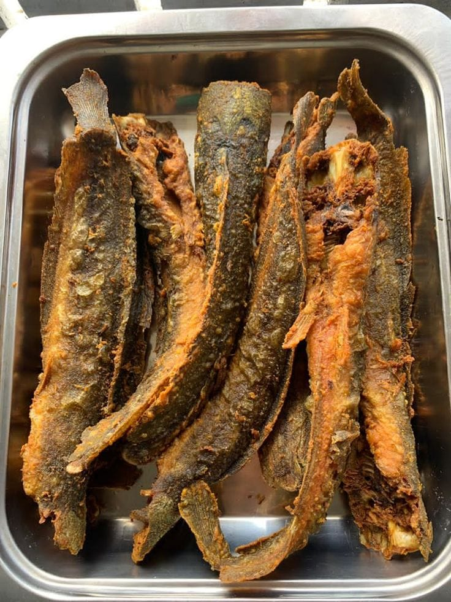
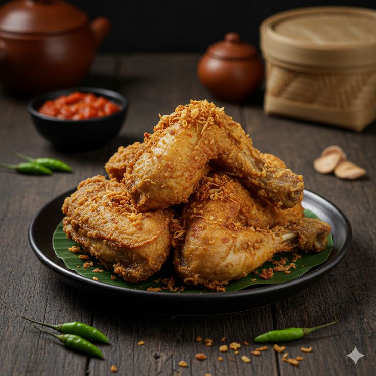
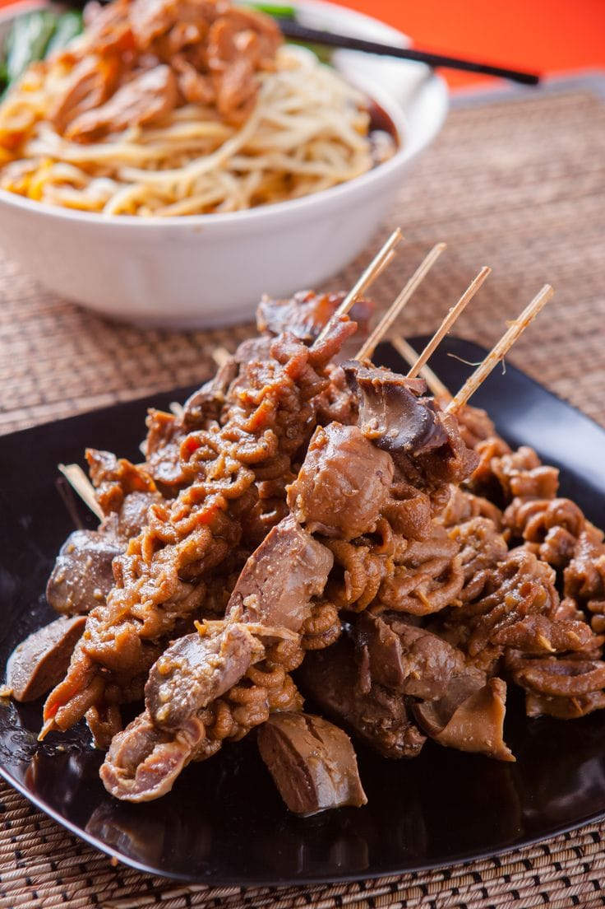
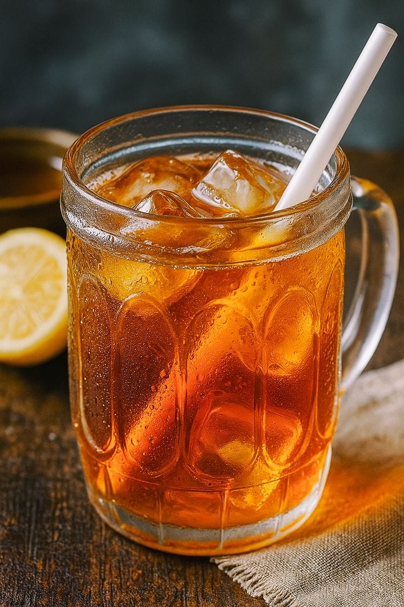
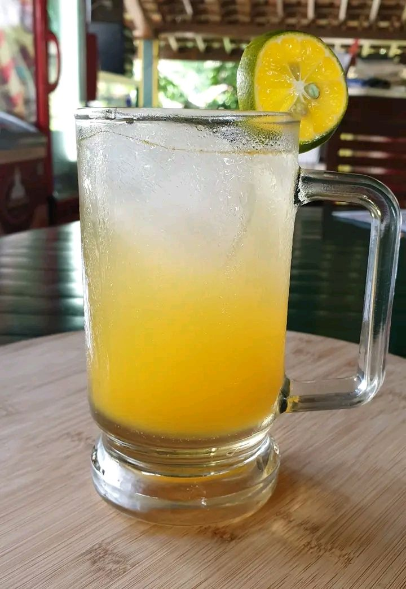

Pecel Original

Nasi putih hangat dengan sayuran rebus dan sambal pecel kacang tanah; gurih, manis, pedas, beraroma kencur.
Harga: Rp12.000
NASI PECELS
Menu dibagi menjadi menu utama, lauk tambahan, dan minuman, lengkap dengan harga.
Nasi putih hangat dengan sayuran rebus dan sambal pecel kacang tanah; gurih, manis, pedas, beraroma kencur.
Harga: Rp12.000
Lauk bersifat pilihan; dapat dipilih satu atau lebih.
Lauk yang lazim menemani nasi pecel, bertekstur lembut.
Harga: Rp4.000

Daging lembut dan gurih, enak dengan sambal pecel.
Harga: Rp8.000

Lauk berprotein yang lebih mengenyangkan.
Harga: Rp10.000

Bagian empedal ayam yang kenyal dan gurih.
Harga: Rp5.000
Setiap minuman tersedia panas dan dingin.

Ringan dan menyegarkan, cocok untuk makanan pedas.
Harga:

Asam segar yang menyeimbangkan sambal pedas.
Harga:
Pilihan untuk sarapan pecel atau penutup makan beraroma kuat.
Harga:
Rekap seluruh harga menu.
| Kelompok | Menu | Harga |
|---|---|---|
| Menu utama | Pecel Original | Rp12.000 |
| Lauk tambahan | Telur | Rp4.000 |
| Lele | Rp8.000 | |
| Ayam | Rp10.000 | |
| Rempela | Rp5.000 | |
| Minuman | Teh | Panas Rp3.000, dingin Rp4.000 |
| Jeruk | Panas Rp4.000, dingin Rp5.000 | |
| Kopi | Panas Rp4.000, dingin Rp5.000 |
Pemula dapat mulai dari satu porsi pecel original tanpa lauk, lalu menambah lauk pada kunjungan berikutnya.
Berikut beberapa contoh pesanan beserta total harganya agar pelanggan mudah memperkirakan biaya.
Lauk bersifat pilihan dan dapat dipilih satu atau lebih sesuai selera. Setiap minuman tersedia dalam pilihan panas dan dingin, dengan harga minuman dingin lebih tinggi Rp1.000 dibanding minuman panas. Harga yang tercantum berlaku untuk satu porsi.
Pelanggan yang membeli untuk dibawa pulang dapat memilih layanan bungkus. Pada layanan ini nasi, sayuran, sambal, dan lauk dipisahkan agar tidak basah dan tetap enak saat dimakan di tempat lain.
Menu utama adalah Pecel Original seharga Rp12.000. Di antara lauk tambahan, telur adalah yang paling terjangkau dengan harga Rp4.000, sedangkan ayam yang paling mahal dengan harga Rp10.000. Untuk minuman, teh panas adalah pilihan termurah seharga Rp3.000, sementara jeruk dan kopi memiliki harga yang sama, yaitu Rp4.000 untuk panas dan Rp5.000 untuk dingin.